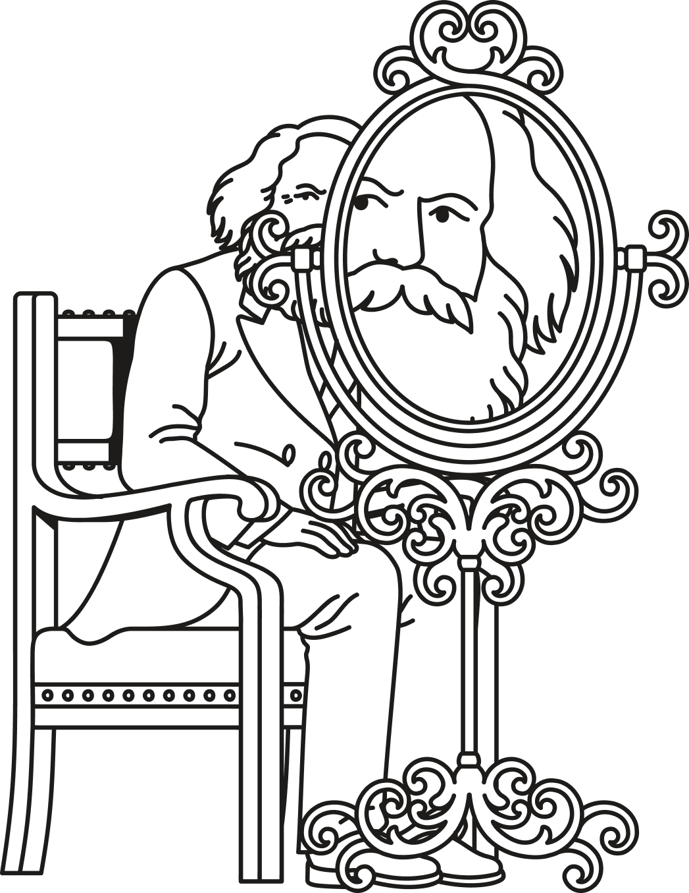

Jacobin × Bonfire — Case study
The socialist magazine wanted more than a comment section. We connected Ghost to Bonfire and gave their readers a federated community space they own.

Our work
Co-design
Product & design
Engineering
Federation
The challenge
It started with a crowdfunding campaign. The readers of Jacobin's German-language edition backed it with a clear demand: not just a nicer website, but a place where they could debate, organise, and build solidarity together — to go beyond an audience that reacts to articles and become a real community.
A traditional comment section wasn't going to cut it, and neither was pointing readers to yet another platform owned by someone else. Jacobin wanted a space its community would actually own, connected to the wider open social web rather than walled off inside it.
Our approach
This is part of an initiative we call Bonfire Mosaic: we work with a community to design a space around how they actually work, and everything we build is free software that belongs in the commons. Jacobin already publishes on Ghost and had no interest in leaving it — the right instinct. Our goal was never to replace the CMS, but to bring a federated social layer to where the team already works.
Nothing here is Jacobin-specific and locked away. It's a reusable foundation any publisher can adopt.
●Over six months of co-design we built the publishing bridge, the conversation layer, and the community spaces — each usable on its own, and designed to work as a single seamless whole. Together they turn an audience that reacts to articles into a community that debates, organises, and belongs.
Publishing
Jacobin already publishes on Ghost and had no interest in leaving it. Rather than replace the CMS, we brought a federated social layer to where the team already works — so publishing and community feel like one product.
Doesn't Ghost already federate?
It does — Ghost broadcasts articles into the fediverse and pulls replies back. That's a great start. But Jacobin's needs pushed further: a structured community space with groups, topics, polls, moderation, and governance. Each tool does what it does best — Ghost publishes, Bonfire hosts the community.
Engagement
An embeddable widget drops into Ghost — or any CMS or static site. Paste a snippet and the page gets a federated comment thread tied to its URL, with the conversation living on Bonfire where it can be moderated like any other content.
Community
Jacobin didn't want its community lost in a feed where an algorithm decides what surfaces. They wanted intentional spaces organised around groups and topics, with governance the community itself can define.
Co-design
The features matter, but so does ownership of the experience. Through Bonfire Mosaic co-design, we tailored the entire space to Jacobin's identity — so members feel they're home, not on a generic platform.
We didn't hand over a settings panel. We ran research and workshops with the Jacobin team to shape the space around how their community actually works.
Colours, typography, logo, layout, and tone — the experience wears Jacobin's brand throughout, as a distinct Bonfire flavour rather than a theme skin.
A complete German translation, built with the team and contributed back to the commons for every German-speaking community that follows.
Why this matters for publishers
None of this is a one-off build. It's a reusable foundation for any publisher or membership organisation that wants a federated social space — a newsletter, a magazine, a media co-op — and the approach extends to WordPress or Drupal.
Publishers like The Verge, 404 Media, and the New York Times are all exploring deeper social integration into their articles. The reason is familiar to anyone whose reach depends on a platform they don't control: rented audiences can be throttled, de-ranked, or lost overnight.
Bonfire offers a different premise. AGPL-licensed, no VC, no ads — no incentive to enshittify the space over time. Every instance federates over ActivityPub, so the community stays connected to the open social web on its own terms. And because it runs on infrastructure the publisher controls, the relationship with readers isn't mediated by a third party that can revoke it.
The launch
jacobin.social is live — and 3,000+ readers now have a community space they own, not one they rent.
What began as a reader-funded demand for something better than a comment section is now a working foundation other publishers can adopt, adapt, and fork. As the community grows, we'll share what we learn — and update this page with what the numbers show.
“{{ Client quote — a line from the Jacobin team on why they built this. }}”
Our role
Co-design
Product & design
Engineering
Federation
Thinking about where your community conversation should live? Everything we built for Jacobin is in the commons and available to build on.
Next case study → Open Science Network